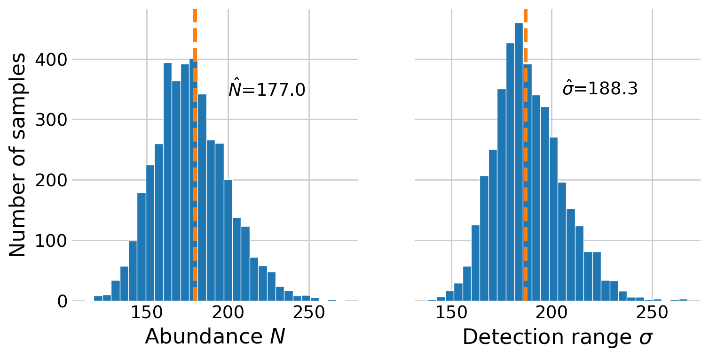
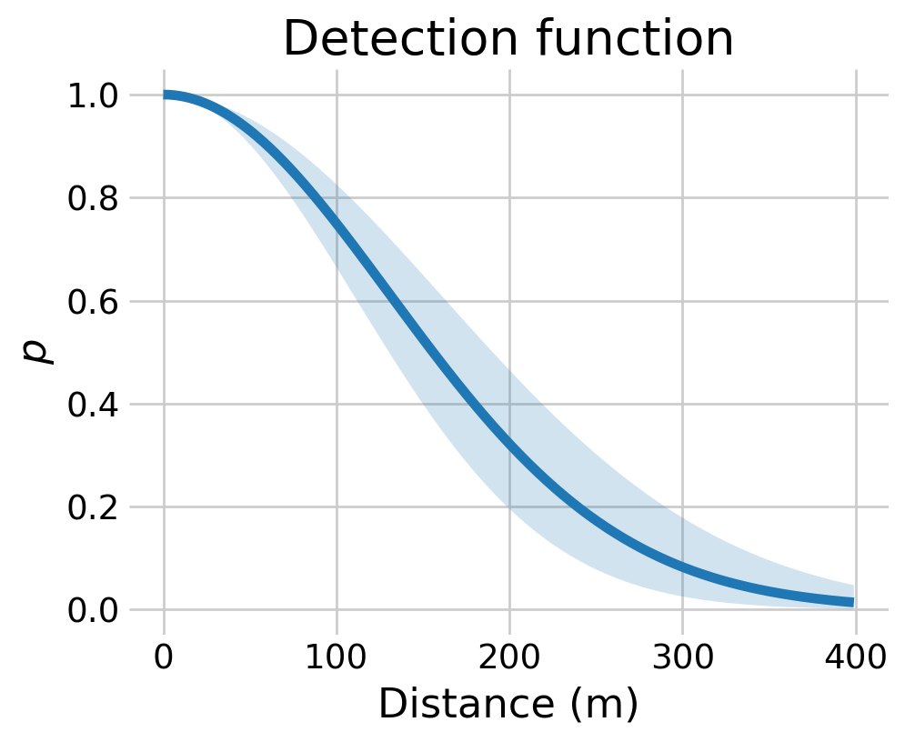

Estimating abundance and density with distance sampling in PyMC
Author
Affiliations
Philip T. Patton
Marine Mammal Research Program
Hawaiʻi Institute of Marine Biology
Published
February 15, 2026
In this notebook, I explore how to fit distance sampling models for estimating the size of a closed population. Similar to the occupancy and closed capture-recapture notebooks, I use parameter-expanded data-augmentation (PX-DA) and the zero-inflated binomial model in this notebook.
The idea with distance sampling, also known as line-transect sampling, is that a surveyer traverses a transect, typically in a boat or a plane. As they survey, they note when they detect an individual, or a group, from the species of interest, and further note the distance from the transect to the animal. Further, they note the angle to the animal(s), such that they can calculate the perpendicular distance from the animal to the transect. We assume that probability of detecting an animal \(p\) decreases monotonically as the distance from the transect grows, e.g., \(p=\exp(-x^2/\sigma^2),\) where \(x\) is the distance and \(\sigma\) is a scale parameter to be estimated. These simple assumptions permit the estimation of the population size \(N\) as well as density \(D.\)
Following Hooten and Hefley (2019), Chapter 24 and Royle and Dorazio (2008), Chapter 7, I use the impala data from Burnham, Anderson, and Laake (1980), who credits P. Hemingway with the dataset. In this dataset, 73 impalas were observed along a 60km transect. The distance values below are the perpendicular distances, in meters, from the transect.
Figure 1: Histogram of the number of detected impalas at varying distances.
Again, we treat this as a zero-inflated binomial model using PX-DA. The trick for doing so is to create a binary vector of length \(M\), \(y,\) that represents whether the individual was detected during the study. Then, combine the indicator with the distance vector \(x\) to create a the full dataset \((x,y).\)
n =len(x_observed)unobserved_count = M - nzeros = np.zeros(unobserved_count)y = np.ones(n)y_augmented = np.concatenate((y, zeros))
The issue is that \(x\) is unobserved for the undetected individuals. To work around this, we put a uniform prior on the unobserved \(x,\) i.e., \(x \sim \text{Uniform}(0, U_x).\) With this “complete” \(x,\) we can construct the detection function \(p\) for the unobserved individuals.
Figure 3: Traceplots for the distance sampling model.
This model samples slower than the models in the other notebooks, presumably because of the unobserved \(x.\) As in the closed capture-recapture notebook, we will have to simulate the posterior for \(N\) using the posterior distribution of \(\psi\) and \(M.\)
RNG = np.random.default_rng()# extract the posterior samples into numpy arraysposterior = az.extract(distance_idata)psi_samples = posterior.psi.to_numpy()# only interested in the unobserved animalsp_samples = posterior.p.to_numpy()[n:]# posterior probabilities of being present in the population but not detectedp_if_present = psi_samples * binom.pmf(0, n=1, p=p_samples)p_total = p_if_present + (1- psi_samples)# simulate the latent inclusion stateZ = RNG.binomial(1, p_if_present / p_total)number_undetected = Z.sum(axis=0)# # # compute the total number of animals in the populationN_samples = n + number_undetected
# plot the posterior distributionssigma_samples = posterior.sigma.to_numpy()fig, (ax0, ax1) = plt.subplots(1, 2, sharey=True, figsize=(8,4))# histograms of the posteriorsax0.hist(N_samples, edgecolor='white', bins=30)ax1.hist(sigma_samples, edgecolor='white', bins=30)# axes labelsax0.set_xlabel(r'Abundance $N$')ax0.set_ylabel('Number of samples')ax1.set_xlabel(r'Detection range $\sigma$')# add the point estimatesN_hat = N_samples.mean()sigma_hat = sigma_samples.mean()ax0.text(200, 350, rf'$\hat{{N}}$={N_hat:.1f}', ha='left', va='center')ax1.text(205, 350, rf'$\hat{{\sigma}}$={sigma_hat:.1f}', ha='left', va='center')# the results from royle and dorazio (2008) for comparisonN_hat_royle =179.9sigma_hat_royle =187ax0.axvline(N_hat_royle, linestyle='--', linewidth=3, color='C1')ax1.axvline(sigma_hat_royle, linestyle='--', linewidth=3, color='C1')plt.show()

Figure 4: Posterior distributions for \(N\) and \(\sigma.\) Estimates from Royle and Dorazio (2008) are shown with vertical lines.
The model shows a high level of agreement with Royle and Dorazio (2008), Chapter 7, although note that they reported \(\sigma\) in terms of 100m units. It is also possible to plot the posterior distribution of the detection function.
xx = np.arange(400)def det_func(x, s):return np.exp(- (x **2) / (s **2))p_samps = np.array([det_func(xx, s) for s in sigma_samples])p_mean = p_samps.mean(axis=0)p_low = np.quantile(p_samps, 0.02, axis=0)p_high = np.quantile(p_samps, 0.98, axis=0)fig, ax = plt.subplots(figsize=(5,4))ax.plot(xx, p_mean, '-')ax.fill_between(xx, p_low, p_high, alpha=0.2)ax.set_title('Detection function')ax.set_ylabel(r'$p$')ax.set_xlabel(r'Distance (m)')plt.show()

Figure 5: Posterior distribution for the detection function. The line represents the posterior mean while the shaded area is the 96% interval.
%load_ext watermark%watermark -n -u -v -iv -w
Last updated: Wed Jan 14 2026
Python implementation: CPython
Python version : 3.13.9
IPython version : 9.9.0
pytensor : 2.36.3
numpy : 2.3.5
arviz : 0.23.0
matplotlib: 3.10.8
pymc : 5.27.0
seaborn : 0.13.2
Watermark: 2.5.0
References
Burnham, Kenneth P, David R Anderson, and Jeffrey L Laake. 1980. “Estimation of Density from Line Transect Sampling of Biological Populations.”Wildlife Monographs, no. 72: 3–202.
Hooten, Mevin B, and Trevor Hefley. 2019. Bringing Bayesian Models to Life. CRC Press.
Royle, J Andrew, and Robert M Dorazio. 2008. Hierarchical Modeling and Inference in Ecology: The Analysis of Data from Populations, Metapopulations and Communities. Elsevier.